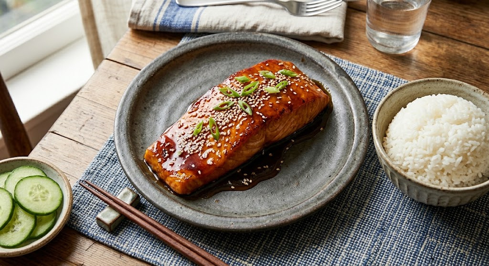

Home
Classic Glazed Salmon Teriyaki

Description
A staple in Japanese home cooking, this classic Teriyaki Salmon features tender fish with crispy skin blanketed in
a sweet and savory sauce. Made with four simple pantry essentials—soy sauce, mirin, sake, and sugar—it delivers an
authentic balance of flavors in under 20 minutes.
Ingredients
- 2 salmon fillets (skin-on)
- 1 tbsp vegetable oil
- 1 tbsp toasted sesame seeds
- 1 stalk green onion, finely sliced
- 1 tbsp cornstarch (for light dusting)
- 2 tbsp soy sauce
- 2 tbsp mirin
- 2 tbsp Japanese cooking sake
- 1 tbsp sugar
Instructions
- In a small bowl, whisk together the soy sauce, mirin, sake, and sugar until the sugar dissolves to create the
teriyaki sauce base.
- Pat the salmon fillets dry with paper towels and lightly dust both sides with cornstarch.
- Heat vegetable oil in a non-stick skillet over medium-high heat.
- Place the salmon fillets skin-side down and sear for 3–4 minutes until the skin is golden and crispy. Flip and
cook for another 2–3 minutes.
- Wipe away any excess oil in the pan with a paper towel.
- Pour the prepared teriyaki sauce into the skillet. Reduce heat to medium-low and let the sauce simmer.
- Spoon the bubbling sauce continuously over the salmon for 1–2 minutes until it thickens into a rich glaze
coating the fish.
- Transfer to a plate, sprinkle with toasted sesame seeds and sliced green onions, and serve hot with steamed
rice.